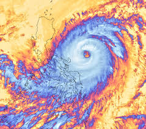

HOME MITIGATION PREPARATIONS RESPONSE RECOVERY SUMMARY
| Every year, 19 typhoons enter the Philippine region and about 7 or 8 make landfall. In the past, some have been extraordinarily powerful and caused casualties and the collapse of infrastructures in the affected area |  |